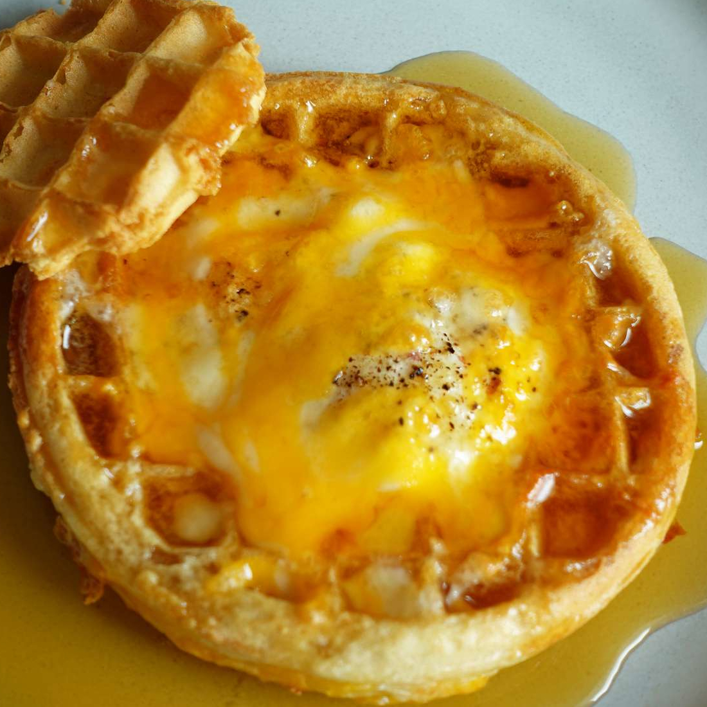

Air Fryer Waffle Egg in a Hole

Description
You'll love the sweet and savory flavors in this easy, all-in-one breakfast.
This fun twist on classic egg-in-a-hole is air fried for easy cooking and clean up.
Plus, the frozen waffle cut-out serves as the cutest dipper for scooping up the soft egg.
Personalize it with your breakfast favorites, like shredded parmesan, bacon bits, or even hot sauce.
Ingredients
- 1 frozen waffle
- 1 large egg
- salt and pepper to taste
- 2 table spoons shredded cheese
- maple syrup totaste
Directions
- Preheat the air fryer to 350 degrees F (175 degrees C).
- Cut a hole in the center of the frozen waffle using the rim of a cup or glass (about 2 to 3 inches in diameter).
Move waffle to a square of parchment paper, then carefully place the parchment paper into the preheated air fryer, along with the small center waffle.
- Crack egg directly into the center of waffle hole; season with salt and pepper to taste.
Close the lid and cook until the white of the egg has started toset, about 5 to 6 minutes.
- Remove small center waffle from the air fryer.
Sprinkle shredded cheese onto egg waffle, and cook until the cheese is melted and egg white is completely set, about 1 to 2 minutes.
- Transfer egg waffle onto a plate; drizzle with maple syrup and serve immediately.